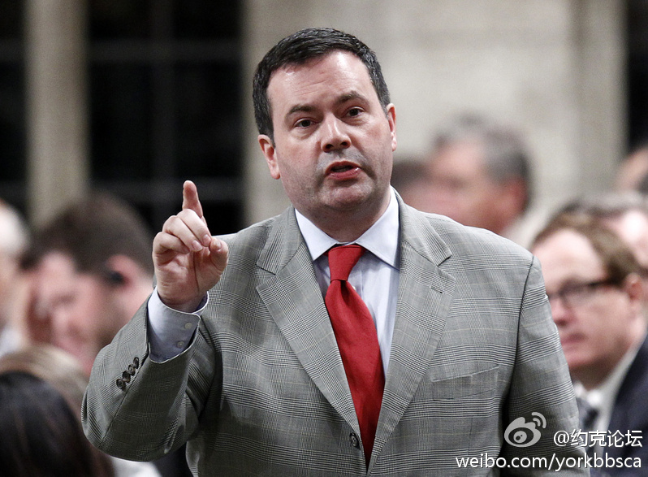

不是说美帝投资移民最终批准率只有30%么？要保证拿卡，50万大概是不够的吧？//@djvu9: 美帝是50万不是更便宜吗//@张显_vivian: 哇。。。@土金刚和鱼菩萨 //@皮小秋: 喀，牛b@约克论坛:【康尼正式宣布全部冻结投资及技术移民申请】移民部长康尼周四正式宣布，加拿大投资移民和技术移民全部冻结(停收新申请)至2013年。中国技术移民全军覆没：旧案被一刀切，新案也冻结。投资移民预料明年涨价至150万投资额，目前有 8万积案，今年给4500配额。网页链接 //@约克论坛 
当然，当年批准他的是民主党多数的议会，或许他也想到也是他报恩之时。//@斯图亚特9: 按理说，作为小布什指定的保守派法官，他理应坚持选他的人赋予他的使命，坚持他一贯的保守立场。但在那种决定美国命运的关键时刻，谁又能单纯从自己的法律立场出发呢？。//@王风风风 @Zhuoyuan9---:抱歉，此微博已被作者删除。查看帮助： 网页链接
按理说，作为小布什指定的保守派法官，他理应坚持选他的人赋予他的使命，坚持他一贯的保守立场。但在那种决定美国命运的关键时刻，谁又能单纯从自己的法律立场出发呢？如果最后是他否定了美国第一个全民医保提议，历史将会怎么看待他？他一定想到了这些。//@王风风风:---:抱歉，此微博已被作者删除。查看帮助： 网页链接
这是什么英语…… //@SLY9: ....//@北美省钱快报: 传说中的翻译信达雅啊，膜拜！//@私家鞋柜: 不知道我翻译的对不对：＂今晚要入党了，我是个性欲很强的女人，我时而贵妇，时而荡妇，老娘我就这样，如果你不喜欢就拔出来。＂『请指正』---:抱歉，此微博已被作者删除。查看帮助： 网页链接